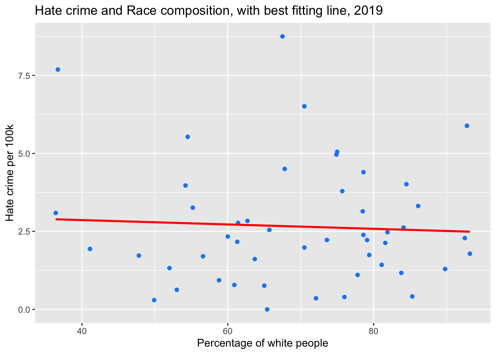

Chapter 5 Results
5.1 How do US hate crimes look like in 2019?
First and foremost, in order to have a rough understanding of 2019’s US hate crimes, we explore the aspects of hate crimes’ locations, offenders and bias motivation in the U.S. in 2019.
5.1.1 Locations of hate crimes
The plot above shows that the locations where hate crimes happened most frequently in 2019 are victims’ homes. Home, a place that usually gives people a feeling of peace and security, is actually a place where crimes happen frequently. It may partially because that home is the easiest place to locate a victim. Also, hate crimes against properties are also likely to happen near home. This observation reminds us to pay attention to security problems even when we are at home. Other places that hate crimes may often happen are streets, highways, roads and sidewalks. A school is also a location that hate crimes occur frequently, which makes sense as it includes people from all kinds of races and ethnicities. Hate crimes not often occur in places such as tribal lands, docks and gambling facilities.
5.1.2 Offenders of hate crimes
These bar charts show information of known offenders about their races, ethnicities and ages. For races, most offenders are White and then Black/African Americans. For ethnicities, most offenders do not provide their ethnicities. Most of the rest are not Hispanic or Latino. All these match the distributions of people’s races and ethnicities in the US. For ages, the majority are equal to or greater than eighteen years old, but it is still noticeable that there are around 1000 hate crimes conducted by people under eighteen.
5.1.3 Bias motivations behind hate crimes

The graph above shows the distribution of bias motivation in 2019. We can see that the motivations for hate are as diverse as the people who form the racial, religious, and mixed-gender melting pot that is the United States of America. There are six main types of bias motivation including Race/Ethnicity/Ancestry/Bias, Religion, Sexual Orientation, Gender Identity, Disability and Gender, of which the largest proportion is Race/Ethnicity/Ancestry Bias that accounts for more than 50% of all hate crimes in 2019. This suggests that bias between different races is the main cause of most hate crimes. In addition, different religious beliefs may also lead to some hate crimes, which may be due to the exclusivity of some religious beliefs to some extend. The bias motivation of hate crime are not only towards some specific minorities, it exists anywhere between many different groups.
5.2 How do a state’s socioeconomic factors influence its hate crime in 2019?
In this part, we look at each state’s hate crimes in detail and try to find what influences a state’s hate crimes.
5.2.1 Hate crimes by States in 2019
This is the plot that shows 2019’s hate crime cases per 100k population in each state. It seems that there is no specific pattern here. WA has the highest value of hate crime cases per 100k population around 9 and then NM. States such as OR and NJ have relatively high values of hate crime cases per 100k population while states such as AR and AL have relatively low values of hate crime cases per 100k population which almost equal to zero in 2019. All states have values of hate crime cases between 0 and 10. There is no specific geographic pattern of hate crime over states.
5.2.2 Factors that may influence hate crimes
Then, several factors are chosen and we hope to find out whether there exist some relationships between hate crime and these factors. We use hate crime rate i.e. hate crime cases per 100k population to represent hate crimes and the factors we explore below are median annual household income, education level, citizenship status (the proportion of citizens), race/ethnicity (the proportion of the white), unemployment rate and political party (Republican or Democrat) of each state.
The plot above shows a overall conditions of all factors and hate crime rate grouped by political party. It is really hard to see any specific distribution, cluster or group of hate crime rate directly in this plot. Every state has its own political, social and economic situations, which makes their values for all variables distinct. Thus, we then build a matrix of plots that can provides us with correlation information between any two numeric variables below.
Since we are mainly interested in the relationship between hate crime rate and factors, the first row of this matrix of plots is most important here. From the first row, we find out that median income, education level and unemployment rate are positively correlated with hate crime rate while citizen status and race/ethnicity are negatively correlated with hate crime rate. Although the strength of all correlations are not very strong since the largest one is around +0.3 and the smallest one is almost zero, it may still be valuable to explore those interesting correlations in more details. Therefore, we carefully study the relationship between hate crime rate and each factor in the following part.
5.2.2.1 Education
In this part, we study the possible relationship between education level and hate crime. People usually associate a high level of education with a low crime rate in our subconscious mind but the result shown in the plot above is somewhat surprising. Except for a few points, as the level of education increases, the hate crime rate also has an increasing trend. The obvious positive slope of the smooth line also shows that from this graph, education level and hate crime rate are positively correlated.
Since education level is a relatively overall factor and we hope to have a deeper understanding of this factor, we decompose the educational factor into high school graduation rate and undergraduate rate to explore the influence of basic education and higher education on crime rate.

In this plot, it is not difficult to see that there is no obvious relationship between the high school education rate and the crime rate. The slope of the smoothing line here is almost zero, which implies that when the high school education rate increases for a state, the hate crime rate still remains at a relatively stable level.
From the two graphs on the bachelor rate, especially the Cleveland graph, areas with higher bachelor rates are more likely to have higher crime rates and the smoothing line has a similar slope as one in education level plot. The result also supports our findings before that with higher educational levels, hate crime rates are supposed to be high. The possible reason for this surprising observation might be that with a increasing demand of a college degree in today’s society, individuals with low level of education are not able to earn as much as their college-educated neighbors.This income inequality combined with their identities as a minority group in a state with generally high education level may greatly motivate those less educated people to do hate crimes.
5.2.2.2 Median Income
From this plot, we can see that the relationship between household income and hate crime rate is very similar to the relationship between education level and hate crime rate in the previous part. Moreover, from the initial overview of correlations among different variables, it can be seen that the education level and income do have a very strong correlation with a value around 0.86. This provides us with confidence to conclude that similar to education level, median income has a positive correlation with hate crimes.
5.2.2.3 Citizenship Status
These two plots display the relationship between citizenship status (the proportion of citizens in a state) and hate crime rate. The best fitting line in the left chart shows a downward trend, which means that as the citizen rate increases, hate crime rate will decrease instead. As for the second heat map, most of the observations are concentrated in the lower right corner, which shows that there are more points at high citizen rate and low crime rate, and confirms that there may be a corresponding negative correlation between them.
5.2.2.4 Race and Ethnicity

This picture depicts the race composition(the proportion of white people) and hate crime rate. Even if the race rate keeps increasing, the distribution of hate crime still appears chaotic, which shows that the composition of Race/Ethnicity does not have a relatively intuitive impact on the hate crime rate.
5.2.2.5 Unemployment Rate
This graph shows the relationship between unemployment rate and hate crime rate. It can be seen from the best fitting line and the distribution of all points that as the unemployment rate rises, the hate crime rate will also increase slightly, which is consistent with our common sense.
5.2.2.6 Political Party
From this boxplot, we can see that in 2019 Republican-led states had lower median value of hate crime cases per 100k population than state governed by Democratic. Also, values of hate crime cases per 100k population in states which governors are democrat are in a larger range while Republican states are concentrated at a relatively low value. Based on that, we may assume that the policy or laws made by Republican may play a better role in eliminating hate crimes.
5.3 How do hate crimes change in US from 2010 to 2019?
Finally, by looking at hate crime data in 2010-2019, we hope to see how the number of hate crimes per 100k changes during this decade.
5.3.1 Hate crimes in US in 2010-2019
The plot above shows the 2010-2019’s values of hate crime cases per 100k population in the entire US. The data is presented in a rough “V” shape. The range is between two and three hate crime cases per 100k population. The lowest one (around 2.15) is in 2014 while the highest one is in 2017 (around 2.75). The reason why 2017 has a high value might be that it was a year when presidents changed.
5.3.2 Hate Crimes by States in 2010-2019
The plots above show each state’s hate crime cases per 100k population from 2010 to 2019. It seems that there does not exist a general pattern here.A lot of states such as Illinois and Iowa tend to maintain their levels of hate crimes while some states such as North Dakota and Vermont tend to fluctuate greatly during this decade. Also, most of states fluctuate in a range between 2 and 5 cases per 100k population. Some may have higher values but all states’ values of hate crimes are under 10 cases per 100k population.